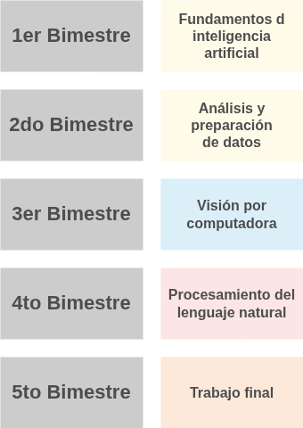
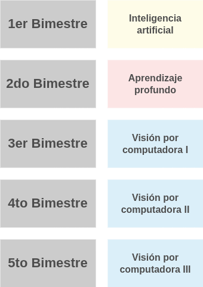
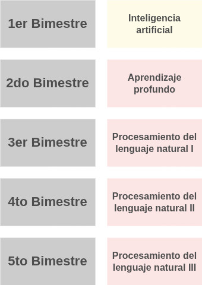
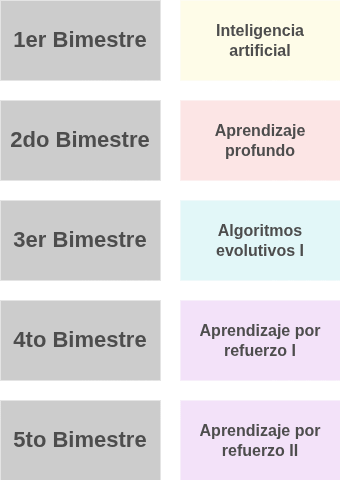
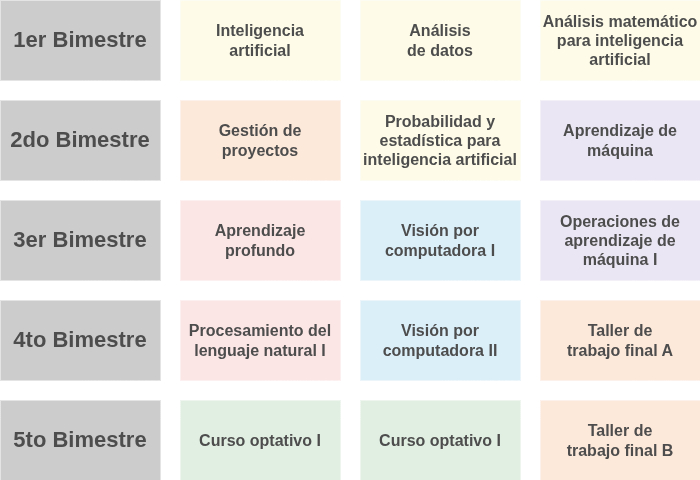
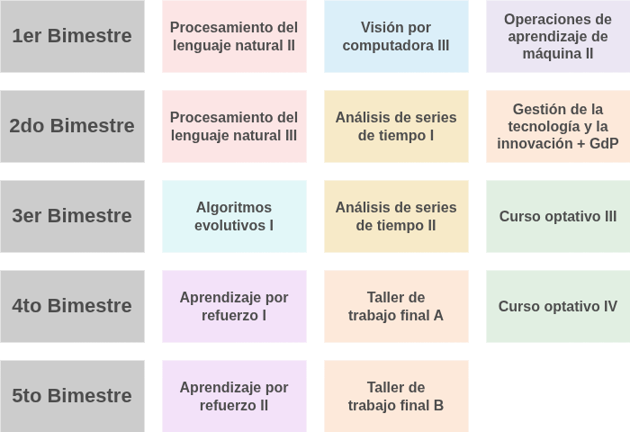
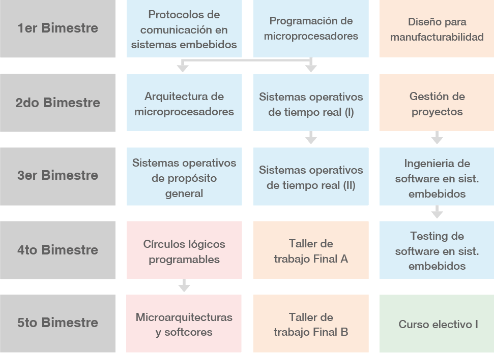
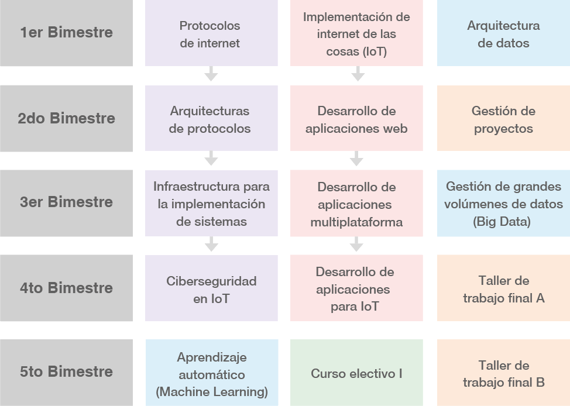

Charla informativa
Carreras de Inteligencia Artificial
Coordinación Académica (coordinacion.academica.ia.lse@fi.uba.ar)
Inscripción (inscripcion.lse@fi.uba.ar)
@lse.posgrados:
https://lse-posgrados.fi.uba.ar/
https://www.instagram.com/lse.posgrados/
Facultad de Ingeniería, Universidad de Buenos Aires
🧠 Introducción
🗓️ Agenda
-
🏛️ Presentación del LSE y oferta resumida de posgrados
-
📜 Diplomaturas en IA
-
🤖 Carrera de Especialización en Inteligencia Artificial (CEIA)
-
🎓 Maestría en inteligencia artificial y maestrías combinadas
-
📋 Materias de gestión de proyectos y trabajo final
-
🧠 Ejemplos de trabajos finalizados
-
❓ Preguntas y respuestas
🏛️ Presentación del LSE y Oferta de Posgrados
Laboratorio de Sistemas Embebidos y panorama general de carreras.
🔬 Laboratorio de Sistemas Embebidos (LSE)
🏛️ Institucional
Pertenece a la Facultad de Ingeniería de la Universidad de Buenos Aires (FIUBA).
🏭 Enfoque Profesional
Formación académica de posgrado orientada a las necesidades de la industria y la tecnología aplicada.
🌐 Ecosistema Integral
Formación continua en Inteligencia Artificial, Sistemas Embebidos, Internet de las Cosas y Microelectrónica.
🌐 Sitio web oficial de posgrados

🎓 Oferta resumida de posgrados
📜 Diplomaturas
- DIIAA (IA Aplicada)
- DPLN (Procesamiento del Lenguaje Natural)
- DVpC (Visión por Computadora)
- DRLAE (Refuerzo y Evolutivos)
- Embebidos / IoT / Microelectrónica
🤖 Especializaciones
- CEIA (Inteligencia Artificial)
- CEIoT (Internet de las Cosas)
- CESE (Sistemas Embebidos)
- CEM (Microelectrónica)
- CEPD (Procesamiento Digital)
🏆 Maestrías
- MIA (Inteligencia Artificial)
- MIAE (IA Embebida)
- MCB (Computación de Borde)
- MIoT (Internet de las Cosas)
- MPD (Sistemas Embebidos)
📜 Diplomaturas en IA
Oferta de diplomaturas del área de Inteligencia Artificial.
🤖 Inteligencia Artificial Aplicada (DIIAA)
Formación inicial e introductoria al área de IA.

🧠 Diplomaturas en ramas específicas de la IA
👁️ Visión por Computadora (DVpC)

🗣️ Lenguaje Natural (DPLN)

🧬 Refuerzo y Evolutivos (DRLAE)

💡 Las diplomaturas específicas (DVpC, DPLN y DRLAE) están conformadas por un subconjunto de las materias que integran la CEIA y la MIA.
🤖 Carrera de Especialización en Inteligencia Artificial (CEIA)
Estructura y recorrido detallado por las materias de la CEIA.
📐 CEIA - Materias básicas

- AMIA - Análisis Matemático para IA
- PEIA - Probabilidad y Estadística para IA
🚀 CEIA - Materias introductorias

- IIA - Introducción a Inteligencia Artificial
- AdD - Análisis de Datos
- AMq - Aprendizaje de Máquina
- AP - Aprendizaje Profundo
🗣️ CEIA - Procesamiento de Lenguaje Natural

- PLN1 - Procesamiento del Lenguaje Natural I
- PLN2 - Procesamiento del Lenguaje Natural II (Optativa)
- PLN3 - Procesamiento del Lenguaje Natural III (Optativa)
👁️ CEIA - Visión por Computadora

- VpC1 - Visión por Computadora I
- VpC2 - Visión por Computadora II
- VpC3 - Visión por Computadora III (Optativa)
⚙️ CEIA - MLOps

- MLOps1 - Operaciones de Aprendizaje de Máquina I
- MLOps2 - Operaciones de Aprendizaje de Máquina II (Optativa)
- MLOps3 - Operaciones de Aprendizaje de Máquina III (Optativa)
🧪 CEIA - Materias optativas (Bloque 1)

- AgD - Agro Digital
- AE1 - Algoritmos Evolutivos I
- AST1 - Análisis de series de tiempo I
- AST2 - Análisis de series de tiempo II
- RL1 - Aprendizaje por Refuerzo I
- RL2 - Aprendizaje por Refuerzo II
🧪 CEIA - Materias optativas (Bloque 2)
- DBIA - Bases de Datos para IA
- Ética en IA
- Herramientas de IA y visión computacional aplicadas en agricultura
- IAE - IA Embebida
- PINN - Redes Neuronales Informadas por Física
🎓 Maestría en inteligencia artificial y maestrías combinadas
Estructura de la Maestría en Inteligencia Artificial y articulaciones del LSE.
🤖 Maestría en inteligencia artificial (MIA)


- Continúa y complementa la formación de la CEIA.
- Suma materias avanzadas/específicas y el desarrollo de la Tesis de Maestría.
🧠 Maestría en Inteligencia Artificial Embebida (MIAE)

- Se obtiene completando la CEIA (Especialización en IA) y la CESE (Especialización en Sistemas Embebidos).
🛰️ Maestría en Computación de Borde (MCB)

- Se obtiene completando la CEIA (Especialización en IA) y la CEIoT (Especialización en Internet de las Cosas).
🌐 Maestría en Internet de las Cosas (MIoT)
- Se obtiene completando la CEIoT (Especialización en Internet de las Cosas) y la CESE (Especialización en Sistemas Embebidos).
📋 Materias de gestión de proyectos y trabajo final
Desarrollo del Trabajo Final de Posgrado.
⚙️ Materias de gestión de proyectos

- GdP - Gestión de Proyectos
- TTFA - Taller de Trabajo Final A
- TTFB - Taller de Trabajo Final B
🎯 Tipos de propuestas para Trabajo Final
- Personal: Idea propia del alumno (contactar al coordinador para guía)
- Laboral: Relacionada con el empleo o vínculos previos
- Programa de vinculación: Propuestas pre-aprobadas de empresas/organismos
🔗 Programa de Vinculación
- Entes participantes: Empresas, laboratorios, organismos
- Propuestas: Ya están pre-aprobadas
- Acceso: Listado disponible al cursar Gestión de Proyectos
- Ventaja: No requieren aprobación adicional
- Director: Puede ser la misma persona que propone el trabajo
📝 TTFA y TTFB - Características
- Redacción: Acompañamiento y orientación para redactar la memoria/tesis
- Procesamiento: Análisis y presentación de resultados
🧠 Ejemplos de trabajos finalizados
Demostraciones y casos reales desarrollados en los posgrados.
Video 1: Trabajo final de CEIA
Video 2: Trabajo final de CEIA
Video 3: Trabajo final de CEIA
Video 4: Trabajo final de MCB
¿Preguntas?
Gracias por su atención
Coordinación Académica (coordinacion.academica.ia.lse@fi.uba.ar)
Inscripción (inscripcion.lse@fi.uba.ar)
@lse.posgrados:
https://lse-posgrados.fi.uba.ar/
https://www.instagram.com/lse.posgrados/
Facultad de Ingeniería, Universidad de Buenos Aires
📌 SECCIÓN DE RESPALDO
Material de la versión anterior para referencia durante la edición.
🧠 Diplomaturas centradas en IA (Respaldo)
🤖 Inteligencia Artificial Aplicada - Introducción
🧠 Diplomaturas centradas en IA (Respaldo)
🗣️ Inteligencia Artificial - Procesamiento del Lenguaje Natural
🧠 Diplomaturas centradas en IA (Respaldo)
👁️ Inteligencia Artificial - Visión por Computadora
🧠 Diplomaturas centradas en IA (Respaldo)
🧬 Inteligencia Artificial - Aprendizaje por Refuerzo y Algoritmos Evolutivos
🎓 Otras diplomaturas (Respaldo)
- 🔌 Sistemas Embebidos - Nivel 1
- 🔌 Sistemas Embebidos - Nivel 2
- 🔌 Sistemas Embebidos - Nivel 3
- 🛠️ Diseño, fabricación y armado de circuitos electrónicos (PCBs) Modalidad a distancia
- 🌐 Internet de las Cosas - Desarrollo de aplicaciones e implementación para IoT
- 🔒 Internet de las Cosas - Comunicaciones y Ciberseguridad para IoT
- 💡 Microelectrónica Digital
- 💡 Microelectrónica Analógica
🎓 Carreras de especialización (Respaldo)
- 🤖 Carrera de Especialización en Inteligencia Artificial (CEIA)
- 🌐 Carrera de Especialización en Internet de las Cosas (CEIoT)
- 📟 Carrera de Especialización en Sistemas Embebidos (CESE)
- 🔧 Carrera de Especialización en Microelectrónica (CEM)
- 📊 Carrera de Especialización en Procesamiento Digital (CEPD)
🎓 Maestrías (Respaldo)
- 🤖 Maestría en Inteligencia Artificial (MIA)
- 📟 Maestría en Sistemas Embebidos y Procesamiento Digital (MPD)
- 🌐 Maestría en Internet de las Cosas (MIoT)
- 🧠 Maestría en Inteligencia Artificial Embebida (MIAE)
- 🛰️ Maestría en Computación de Borde (MCB)